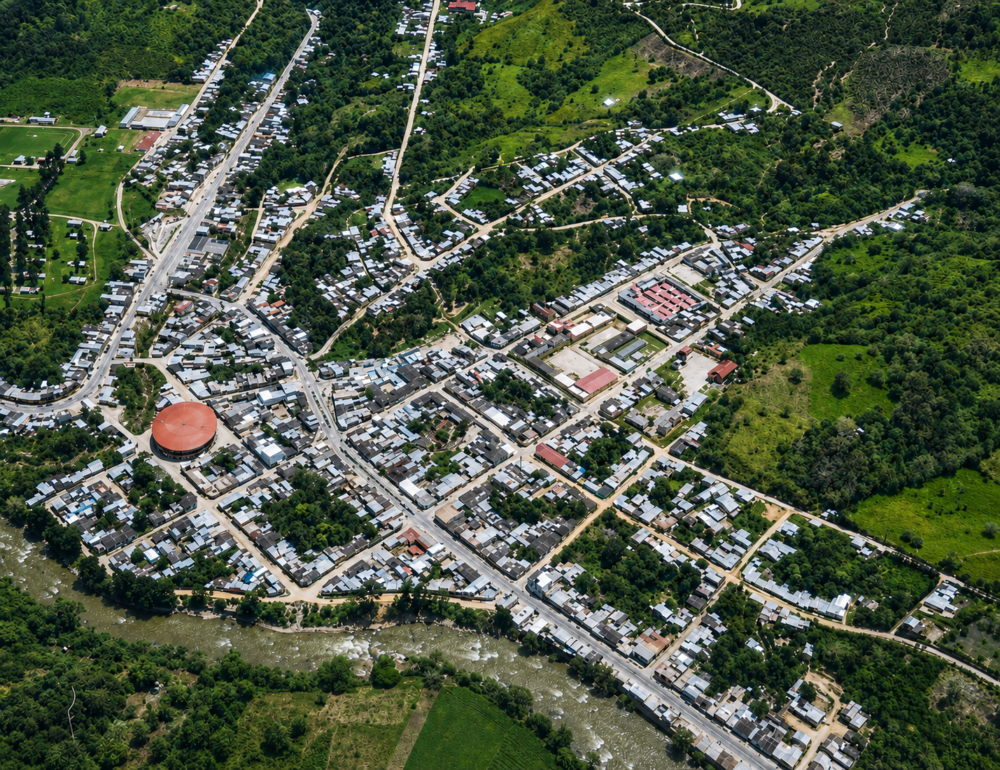

Conoce Pedro Ruiz
Punto de conexión hacia Cuispes, Yumbilla y las cataratas de Bongará
Pedro Ruiz Gallo es una localidad ubicada en el distrito de Jazán, provincia de Bongará, región Amazonas. Por su ubicación junto a la ruta regional, es un punto estratégico para movilizarse hacia diferentes destinos del norte de Amazonas.
Este destino es conocido principalmente por ser una puerta de acceso hacia Cuispes y la catarata de Yumbilla. Desde Pedro Ruiz, los visitantes pueden continuar en taxi o mototaxi hacia Cuispes para iniciar recorridos de naturaleza, caminatas y visitas a cataratas.
